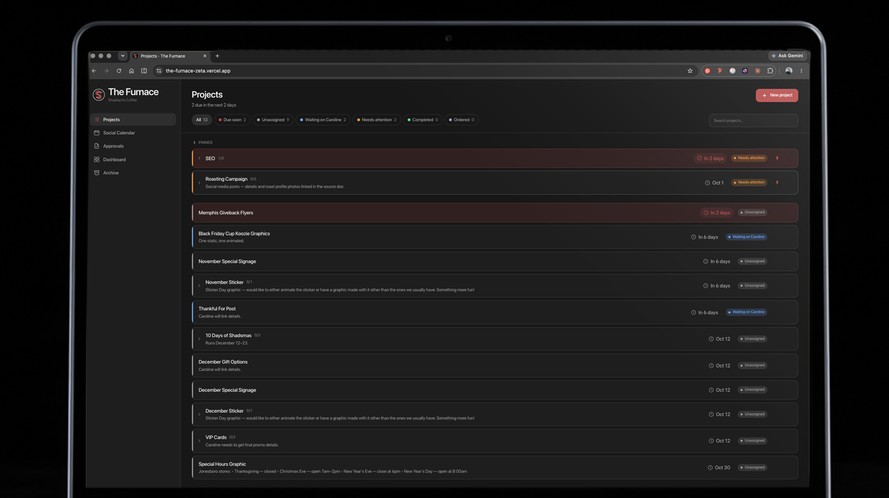
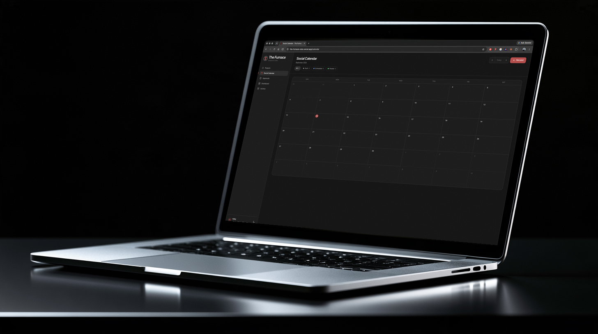
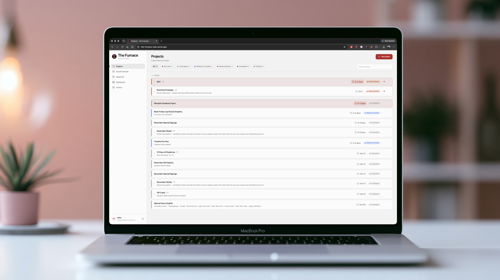
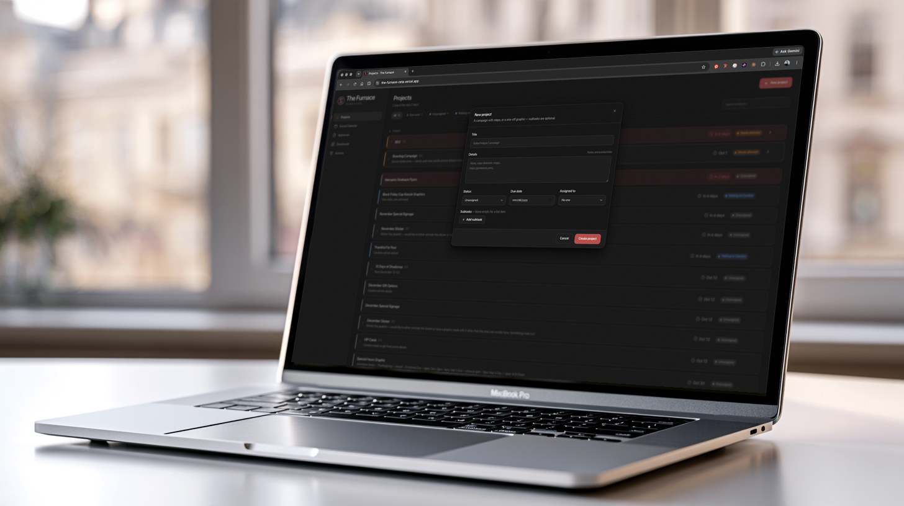
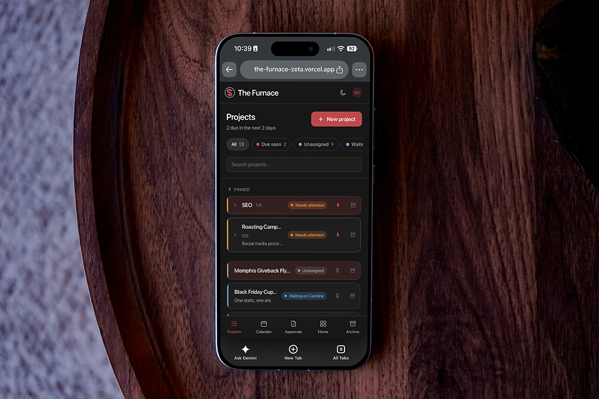
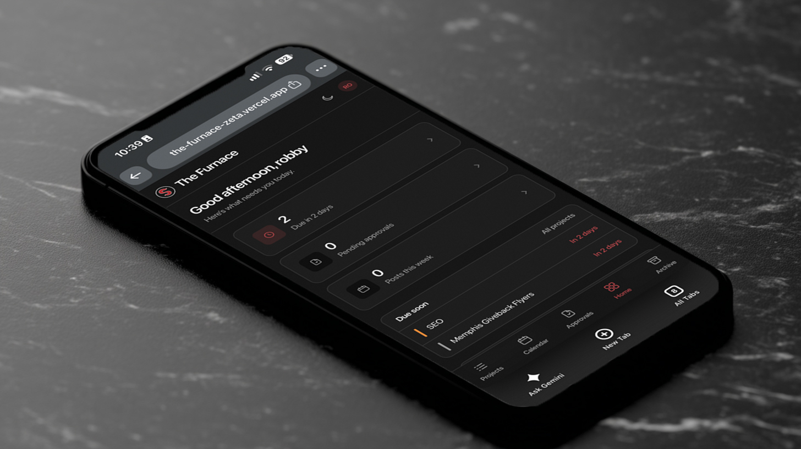

Internal Tool · Shadrachs Coffee
An internal command center for Shadrachs Coffee — one shared, always-current source of truth for projects, social, and approvals.

Problem — Solution
How a marketing team's trial-and-error across three tools became one always-current place to run the work.
"How might we give a small marketing team one always-current place to run projects, plan social, and clear approvals — without the overhead of a heavyweight project-management tool?"

Build & Architecture
Server components fetch initial data; interaction and writes happen client-side against Supabase, with RLS enforcing access. Writes are optimistic and revert on failure, so the UI never waits on a round trip for a checkbox.
Each replaces something the team was doing by hand.


Design System
Light and dark are two token sets in one file — no component knows which mode it is in. Status colors are a fixed, non-editable mapping.


Under the Hood
The parts that were not just typing.
Red buttons rendered with black text in light mode. Base resets sat unlayered in globals.css — and unlayered CSS outranks any cascade layer — so button { color: inherit } beat text-accent-fg. Fixed by moving the resets into @layer base.
PostgREST exposes anything in the public schema as a callable endpoint — including two SECURITY DEFINER trigger functions. Execute was revoked from anon and authenticated; Supabase advisors returned clean.
.test() on a /g regex advances lastIndex between calls, so auto-linking pasted URLs worked only every other time. Replaced with index parity from the split.
date columns return YYYY-MM-DD; parsing those with new Date(str) treats them as UTC midnight and shifts the day backward west of Greenwich. All conversions go through local-time constructors.
Decisions Worth Defending
Putting "Archived" in the status dropdown would make it mutually exclusive with "Completed" and lose the record of how a project ended. archived_at is orthogonal — the project keeps its status and just leaves the board.
Same reasoning — "when was this raised?" stays answerable, and ordering the pinned group by recency comes for free, without another migration.
Position plus a red pin already signal importance. A red wash on top would make pinned rows indistinguishable from genuinely due-soon ones — and cost the signal that matters.
It is a review decision, not a destructive action, and shouldn't compete with Approve for the eye.
v1 Shipped